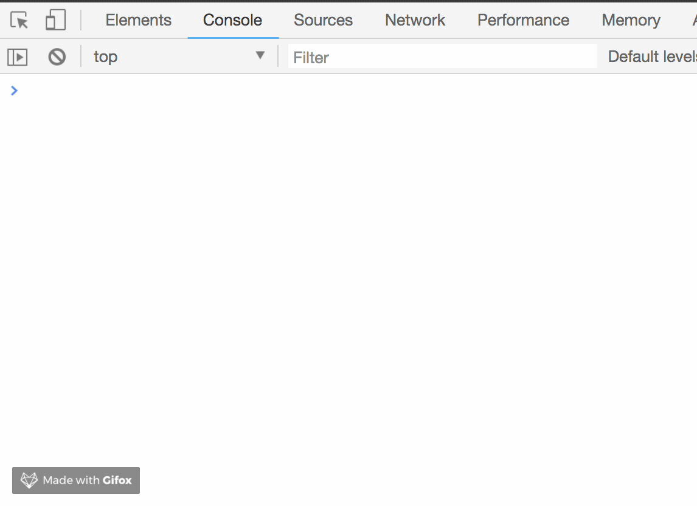

之前面试是被问到这个问题，但是没有去深究，它的答案，今天工作之余，我们一起来了解什么是函数防抖和节流。
防抖 Debounce
定义：在事件被触发n秒后再执行回调，如果在这n秒内又被触发，则重新计时。
个人理解：小孩子打破了一个玻璃花瓶，要想花瓶修复好，需要等三天，如果这个花瓶修复了一半，小孩子又去打破它，那么又要重新等待三天。
1 | <!-- 模拟一段ajax请求 --> |
采用这种方式，我们只要按下键盘，就会触发这次ajax请求。不仅从资源上来说是很浪费的行为，而且实际应用中，用户也是输出完整的字符后，才会请求。
看一下运行结果：
我们优化一下：
1 | <!-- 模拟一段ajax请求 --> |
看一下运行结果：
可以看到，我们加入了防抖以后，当你在频繁输入，不会频繁发送请求，只有当你在指定间隔内没有输入时，才会执行函数。如果停止输入但是在指定间隔内又输入，会重新触发计时。再看例子：
1 | let biu = function () { |
看一下运行结果：

这个栗子就很好解释了，如果在时间间隔内执行函数，会重新触发计时，biu会在第一次1.5s执行后，每隔1s执行一次，而boom不会执行。因为它的时间间隔2s,而执行时间是1s，所以每次都会重新触发计时。
节流 Throttle
定义：规定在一个单位时间内，只能触发一次的函数。如果这个单位内触发多次函数，只有一次生效。
个人理解：函数节流就是fps游戏的射击速度，就算一直按着鼠标射击，也只会在规定射速内射出子弹。
1 | function throttle(fun,delay){ |
运行结果如下：
可以看到，我们在不断输入时，ajax会按照我们设定的时间，每1s执行一次。
结合刚刚的biubiu的栗子
1 | let biubiu = function(){ |
总结
函数防抖和函数节流都是防止某一时间频繁触发，但是这两兄弟之间的原理却不一样。函数防抖是某一段时间内多次触发，会不断触发时间重计时，比如我现在时间的间隔是3秒，我在1.5s时再次触发，间隔会重新回到3s,而函数节流是间隔时间执行,比如我现在是1s的间隔，1s过去必会执行。
应用场景
防抖
- search搜索联想，用户在不断输入值时，用防抖来节约资源
- window触发resize时，不断的调整浏览器窗口大小会不断的触发这个事件，用防抖来让其只触发一次
节流
- 鼠标不断点击触发，mousedown单位时间内只触发一次
- 监听滚动事件，如微信的朋友圈下拉刷新，用throttle来让它在固定的间隔时间运行。